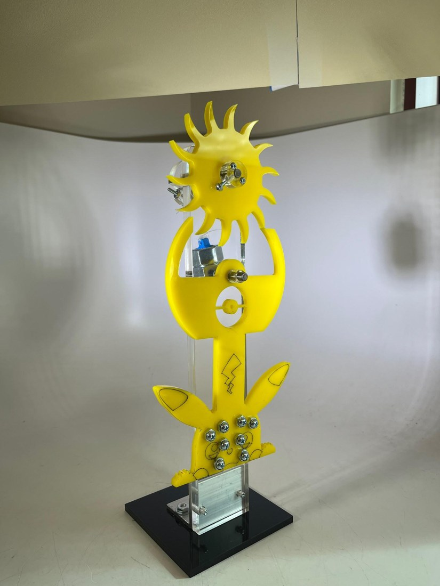
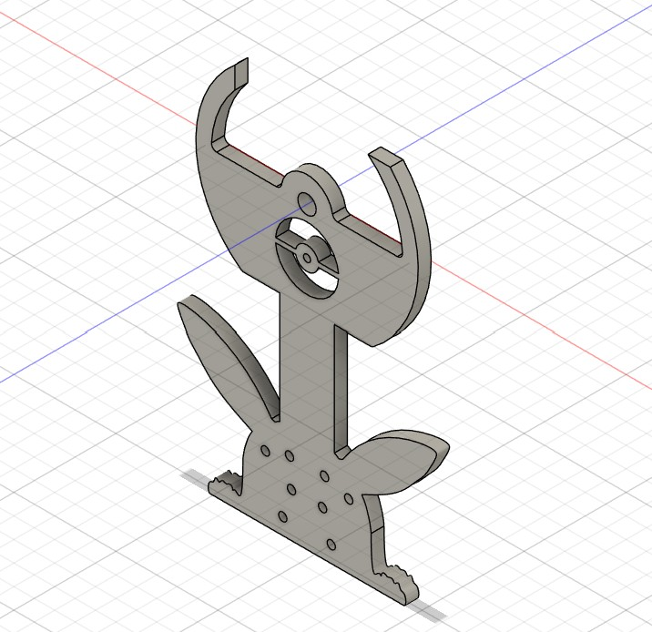

-
MAE3 Pendulum Clock
A laser-cut pendulum clock, and a test of two ways to predict how fast it would tick.
Where MAE 3, UC San Diego When 2025 Skills Fusion 360 CAD, laser cutting, drilling, rigid body and point-mass analysis Outcome Rigid body model predicted one escapement revolution within 3.41% of the measured 10.07 s For MAE 3’s clock project I designed a pendulum in Autodesk Fusion, laser cut it from acrylic, then drilled and assembled it with an escapement wheel that advances one tooth for every swing. Eight bolts with nuts sit at the base of the pendulum as weights.

The finished clock. The eight silver bolts at the base are the adjustable weights. 
The pendulum in Fusion 360. The question I set out to answer was how well two models predict the clock’s timing. The point-mass model puts all of the mass at one point and gave 8.01 s for one revolution of the 14-tooth wheel, 20.42% off the measured 10.07 s. The rigid body model uses the pendulum’s moment of inertia from Fusion plus each bolt’s contribution, and gave 9.72 s, only 3.41% off.
The rigid body model wins because it accounts for the pendulum’s actual shape and size. Both models still ran fast, since neither includes the friction where the escapement wheel meets the pendulum arms. Along the way I checked my inputs too: the measured center of mass was within 4.36% of the calculated one, and the real pendulum weighed 64.0 g against 78.2 g in CAD, a gap I attributed to material lost in laser cutting.
Documents